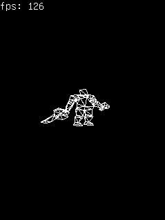
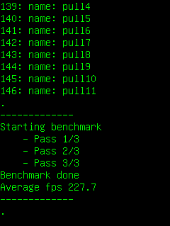
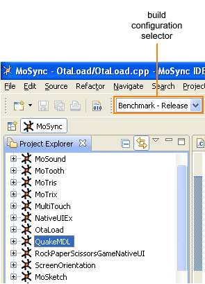

This application either renders a Quake 1 model or, in benchmark mode, measures the raw speed of the target device's CPU. This application is useful for comparing performance across devices.
|  |  |
This example is included in the MoSync SDK installation in the /examples folder. For information on importing the examples into your workspace, see Importing the Examples.
Behaviour
The behaviour of this application is controlled by the project's build configuration settings. Before building the project (or running it in the MoRE emulator), select one of the Render or Benchmark build configurations from the build configuration selector on the toolbar:

When built in Render mode, this application renders a wireframe animation and shows the current frames-per-second.
When built in Benchmark mode, this application calculates the average frames-per-second that the CPU can render and can be used as a benchmark score to test the performance of different devices.